Coding-Basic HW2, default topic: Adaptive FP64 GEMM Emulation + HPL · NCHC nano4, 1× NVIDIA H200 · CUDA 13.1 / cuBLAS 13.2 (NVHPC 26.3) · repo hw2/ (measurements are tied to Slurm job files under results/<job>/)
This report presents ozdgemm, an adaptive FP64 matrix multiplication library that uses INT8 Tensor Cores through Ozaki scheme II and the Chinese remainder theorem. It describes the implementation, per-entry accuracy checks, GEMM measurements, integration with netlib HPL, and comparisons with NVIDIA HPL. On one H200, the final library reaches 1.51 times the cuBLAS DGEMM speed at 16384 cubed with 14 moduli. Smaller inner dimensions reduce the benefit. The correctness suite reports no failures. The netlib HPL score remains near 2 TFLOPS because transfers and host work dominate. NVIDIA HPL reaches 39.25 TFLOPS on the same H200 node at a similar problem size. All measurements are tied to result files. The RTX 5090 estimates are identified as model projections.
Task. Implement FP64 GEMM emulation on low-precision Tensor Cores that is adaptive (chooses its precision and backend per call), integrate it into HPL, and show where it helps and where it does not. The deliverables are a library, its correctness evidence, GEMM and HPL performance, and an honest account of the limits.
Why it matters. Recent GPUs grow low-precision throughput much faster than FP64. Consumer GPUs (the RTX 5090 in the spec) have ~1/64-rate FP64. If FP64 GEMM can be rebuilt exactly from INT8 products, scientific codes keep FP64 accuracy at low-precision speed. The open questions are how many INT8 products are needed, how to guarantee the accuracy, and when the overhead is worth it.
Setting. The available GPU types for this project are H200 and RTX 5090. The measured results included here use one H200 (sm_90, 700 W): FP64 Tensor Core peak 67 TFLOPS (cuBLAS reaches ~56) and INT8 1,979 dense TOPS (cuBLAS reaches ~1,350). That is a hard case for emulation because FP64 is strong. Section 6 discusses RTX 5090 model projections. Those values are not measured RTX 5090 results.
| Criterion | How it is measured |
|---|---|
| Accuracy is guaranteed, not hoped for | every output entry checked against a proven bound using a double-double reference GEMM |
| Make backend and accuracy decisions visible | AUTO predictions and reported fallback reasons, with speed checked on measured cases |
| Faster than cuBLAS DGEMM where the hardware allows | median of 10 timed calls, native timed in the same job on the same GPU |
| Runs inside a real application | HPL 2.3 passes its residual check with emulated DGEMM |
| Positioned against the state of the art | NVIDIA's HPL (HPC-Benchmarks) on the same node |
An FP64 number has a 53-bit significand. INT8 Tensor Cores multiply 8-bit integers and accumulate exactly in INT32. Ozaki scheme II bridges the gap with the Chinese remainder theorem (CRT):
Turn FP64 into big integers. Scale each row of A and column of B by a power of two and truncate, giving integer matrices
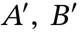
Split each big integer into small residues. Pick pairwise-coprime moduli 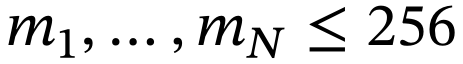 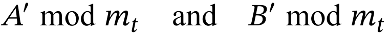
Multiply residues exactly. 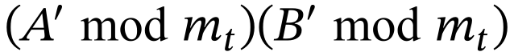 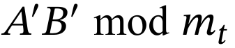
Rebuild the product. The CRT recovers the integer product uniquely from its N residues when the product is within the signed reconstruction range:
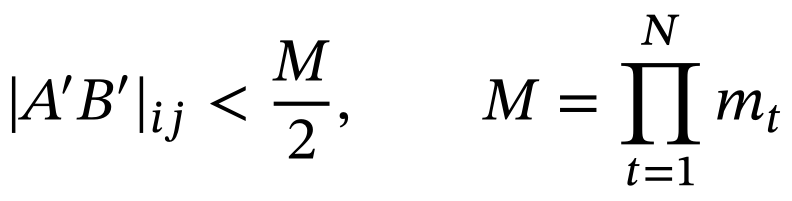
Undo the scaling and you have the FP64 product.
Toy example. With moduli 7 and 11 ( 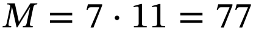 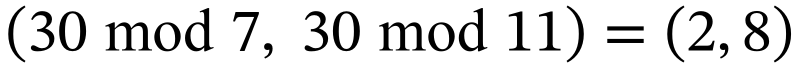 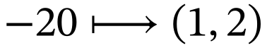 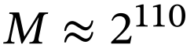 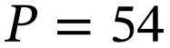
The trade-off in one line. N moduli cost N INT8 GEMMs plus conversion and CRT, versus one FP64 GEMM. On the H200 INT8 is ~24×
faster than FP64, so even with free conversion the approximate throughput ceiling is 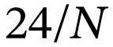
| Stage | Operation | Purpose |
|---|---|---|
| 1. Scale | Choose power-of-two row and column exponents. | Bound the scaled input norms and the product range. |
| 2. Convert | Truncate scaled FP64 inputs and store residues as INT8. | Represent large integers using small coprime moduli. |
| 3. Multiply | Run one INT8 GEMM per modulus with INT32 accumulation. | Compute the residue products exactly. |
| 4. Reconstruct | Reduce the results and apply the CRT in a fused kernel. | Recover the signed integer product. |
| 5. Unscale | Apply the inverse scaling, alpha and beta. | Return 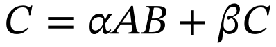 . |
| Adaptive and AUTO | Select the moduli count and compare predicted runtimes. | Use native DGEMM when accuracy or runtime requires it. |
Scaling bound. For each row of A, pick a power-of-two exponent so the scaled row has a 2-norm below the retained precision limit. Apply the same rule to columns of B. The bound makes CRT reconstruction unambiguous:
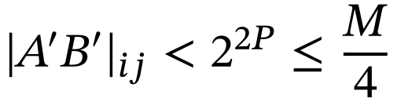
The retained precision is selected from the modulus product:
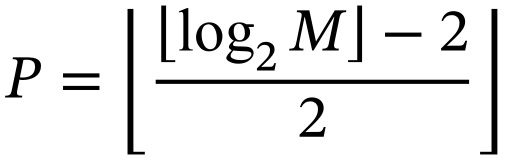
For 14 moduli, .
Exact CRT in FP64. The reconstruction uses the following coefficients:
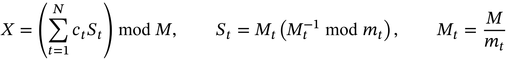
The modulus product exceeds 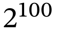
Error budget. Let C0 be the input matrix, Cexact the exact real-arithmetic update, and the hatted C the returned FP64 result. The truncation estimate and final rounding budget are kept separate:
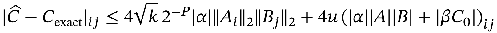
Here u is 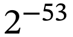
GEMM call shape. For 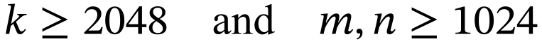
The requested tolerance controls the emulation truncation term. For a certified emulated call, the total error budget also includes final FP64 rounding:
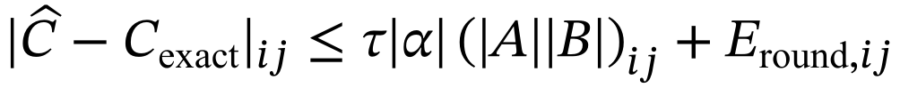
For positive tol, 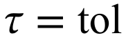 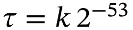
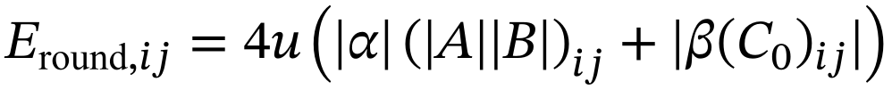
For example, A = B = 1, alpha = beta = 1, and C0 = 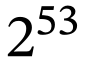 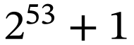
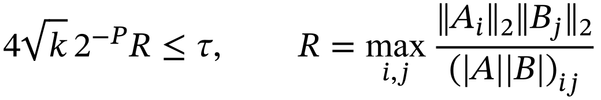
Level 1. One extra INT8 GEMM uses conservatively rounded input magnitudes:
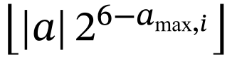
The values are between 0 and 127 and never exceed the true scaled magnitudes. This gives a lower bound on the absolute matrix product and an upper bound on R. Pick the fewest moduli whose retained precision satisfies:
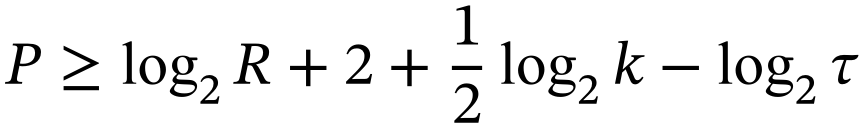
Level 2 runs only if level 1 fails. Wide exponent ranges can round lower bounds to zero. Two floor-quantized bands retain more of each scaled magnitude. Four INT8 GEMMs, accumulated in 64 bits, form a finer lower bound:
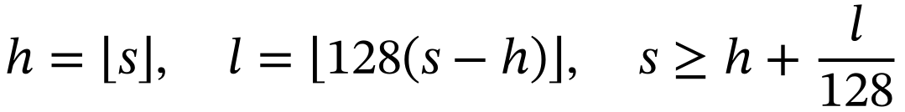
The four products are hh, hl, lh and ll. Their weighted sum gives the lower bound on the scaled absolute matrix product. Restoring the row and column power-of-two scales gives a bound for the original operands.
Fallback. If the estimator cannot certify the truncation target with at most 16 moduli, including when its lower bound is still zero, return native DGEMM (fallback_reason = 4). This means the estimator cannot certify the requested target. It does not prove that the true product needs more than 16 moduli. A native fallback is reported and may miss the requested tolerance.
A linear cost model predicts native and emulated time from (m, n, k, moduli). Its coefficients are fitted by least squares on relative error (scripts/fit_model.py, job 466503). The worst prediction error is 15.9%, and 63/63 fixed-moduli comparisons select the faster measured path on that same fitting grid. These are in-sample checks, not held-out validation.
AUTO can select native before scaling when the model predicts that even the fewest admissible moduli cannot win. Later decisions can incur estimation work. Runtime prediction is empirical and cannot guarantee that AUTO is never slower on an unseen shape or under different GPU conditions. The caller can inspect predictions and fallback reasons or force a backend.
Fallbacks with reason codes: 1 NaN/Inf input (IEEE result preserved), 2 degenerate (k = 0, α = 0, k > 131056 [INT32 accumulator], workspace cap), 3 AUTO chose native, 4 estimator could not certify the tolerance. No fallback is silent: ozd_get_info reports the path, the moduli used and the reason.
API call sequence (pseudocode):
Create handle h on stream Set backend(h, AUTO) to select native or emulated GEMM Set accuracy(h, 0.0) for a native-scale truncation target, or set moduli(h, 14) Reserve workspace(h, m, n, k) before the timed region Call ozd_dgemm(h, opA, opB, m, n, k, alpha, A, lda, B, ldb, beta, C, ldc) Get info(h) for the selected path, moduli, fallback reason and predictions
netlib HPL 2.3 (unmodified tarball, sha256-checked) is built with -DHPL_CALL_CBLAS. A link-time shim
(hpl/ozd_shim.cu) defines cblas_dgemm: updates with 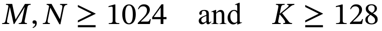
netlib HPL keeps its matrix in host memory, so each offloaded update copies A, B and C over PCIe. A 3-line patch to HPL_pdtest.c page-locks the matrix and pre-allocates every device buffer before the timed solve (late_allocs = 0).
The shim streams C in 2048-column chunks on three streams, so host→device copy, GEMM and device→host copy overlap. With fixed moduli the result is bitwise identical to the serial path.
Reference: tests/common.cuh accumulates the reference GEMM in double-double arithmetic, then stores the result as FP64. The comparisons therefore use an FP64-rounded reference, not an exact real-arithmetic oracle. The checks provide evidence for the stated error budget on the tested data.
Criterion: every emulated output entry is compared with the rounded reference using the full error budget in Section 3.2 (fixed moduli) or 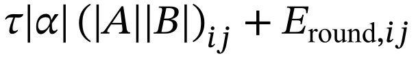
Suite (build/test_ozdgemm, job 466571): 36 cases (all four transposes, odd shapes, padded lda, 1×1×1,
skinny, k = 16…16384, zero vectors, rows scaled by 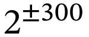
Adaptive sweep (jobs 461134, 462933, 466503): 108 cases over 1024² × k in {256, 1024, 4096}, tol 1e-15…1e-3, uniform and φ data. All 79 emulated cases pass the full adaptive error budget. The largest stored error/budget ratio is 0.057. Uniform (HPL-like) data needs 14 moduli at tol = 0, 11 at 1e-9, 8 at 1e-6.
NaN/Inf inputs fall back and reproduce IEEE NaN/Inf placement. Column blocking and repeated calls are bitwise identical.
| Selected cases (job 466571) | moduli | emu error | native error | err/bound | path |
|---|---|---|---|---|---|
| square, uniform, 512³ | 14 | 3.8e-16 | 4.7e-16 | 0.052 | emulated |
| rows scaled by 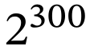 | 14 | 3.8e-16 | 4.4e-16 | 0.052 | emulated |
| 8 moduli (fixed) | 8 | 7.2e-09 | 4.7e-16 | 0.063 | emulated |
| adaptive, tol = 0, HPL-like, β ≠ 0 | 14 | 6.4e-16 | 6.1e-16 | 0.064 | emulated, level 1 |
| adaptive, φ = 2, tol = 1e-6 | 11 | 9.8e-10 | 5.7e-15 | 0.054 | emulated, level 2 |
| adaptive, φ = 4, tol = 0 | - | 4.3e-15 | 4.3e-15 | - | native, reason 4 |
The benchmarks compare the entire emulated DGEMM call with native cuBLAS DGEMM. The square-matrix sweep shows how increasing arithmetic work amortises conversion and reconstruction costs. The HPL-shaped sweep changes k while holding m and n large. Speedup is native median time divided by emulated median time. Values above one favour emulation. The following tables and figures are calculated from the stored CSV files.
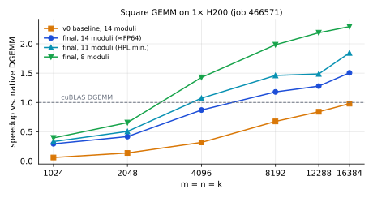
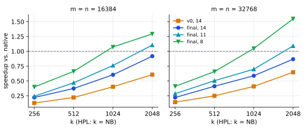
| Shape m×n×k (job 466571) | native ms | v0, 14 | final, 14 | final, 11 | final, 8 |
|---|---|---|---|---|---|
| 16384³ | 163.4 | 0.98× | 1.51× | 1.85× | 2.30× |
| 8192³ | 19.5 | 0.68× | 1.18× | 1.46× | 1.98× |
| 4096³ | 2.26 | 0.32× | 0.87× | 1.07× | 1.43× |
| 32768²×1024 (HPL update, NB = 1024) | 39.7 | 0.41× | 0.59× | 0.70× | 1.05× |
| 16384²×256 | 2.50 | 0.13× | 0.22× | 0.24× | 0.40× |
| 16384×64×16384 (skinny) | 0.68 | 0.02× | 0.08× | 0.10× | 0.13× |
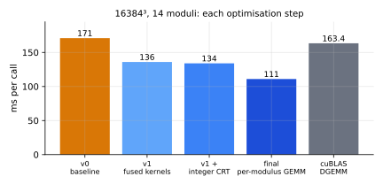
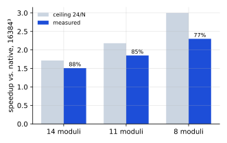
Where the time goes (Nsight Systems, job 466571). At the HPL shape 32768²×1024 with 14 moduli: INT8 GEMM 35.5 ms (54%), CRT 28.5 ms (43%),
convert 1.4 ms, scale 0.25 ms, versus native 38.3 ms. Both big kernels are bound by the 60 GB INT32 intermediate ( 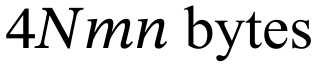
Optimisation we considered and dropped. A fused INT8 GEMM + mod epilogue (CUTLASS) storing residues as uint8 would cut that traffic 4×. Costed at the INT8 rate we actually reach, it lands at ~35-40 ms versus 38 ms native at the HPL shape: break-even, and < 1% of the HPL score.
HPL checks the scaled residual against a threshold of 16. The modulus sweep isolates the accuracy trade-off: reducing the number of INT8 products makes the calculation cheaper but increases truncation error. The measurements below use N = 20000 and NB = 1024 in job 461194.
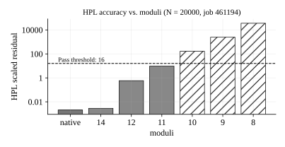
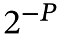
model predicts. For this tested N = 20000, NB = 1024 configuration, 11 is the smallest tested modulus count that passes.| Moduli (N = 20000, job 461194) | residual | result |
|---|---|---|
| native | 2.1e-3 | PASS |
| 14 | 2.9e-3 | PASS |
| 12 | 0.59 | PASS |
| 11 | 9.6 | PASS |
| 10 | 165 | FAIL |
| 9 | 2,497 | FAIL |
| 8 | 36,101 | FAIL |
Application speed depends on the fraction of time spent in GEMM. The timing breakdown below separates GPU arithmetic, PCIe transfers, CPU BLAS and remaining HPL work. These are serial-offload measurements, so the components can be stacked without double-counting overlapping work.
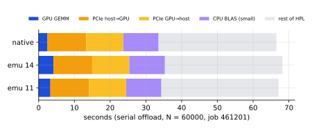
| Config, N = 60000 (job 461201) | time s | GFLOPS | vs native | residual |
|---|---|---|---|---|
| GPU native DGEMM | 66.51 | 2,165 | 1.000 | 2.3e-3 |
| emulation, 14 moduli | 68.21 | 2,111 | 0.975 | 3.1e-3 |
| emulation, 11 moduli | 67.12 | 2,146 | 0.991 | 6.3 |
| AUTO, tol = 0 (native on all 57 calls) | 66.47 | 2,167 | 1.001 | 2.3e-3 |
| CPU only (OpenBLAS, N = 20000, job 461194) | 10.74 | 497 | - | 2.2e-3 |
Overlap helps everyone: pipelining the copies with the GEMM cuts HPL time 14% (+16.6% GFLOPS) for native (jobs 461491, 462597). Emulated GEMMs then hide behind the copies (offloaded wall 8.15 s vs 8.04 s native).
A bug found by overlap: the first pipelined version made emulated chunks 2.2× slower. The NaN/Inf check read its flag back with cudaMemcpyAsync, which queued behind the previous chunk's device→host copy. A one-thread kernel now writes the flag to mapped pinned memory. Emulated GEMM time fell from 5.30 s to 2.79 s, matching a run with the check disabled.
Fewer moduli do not help: 12 or 11 moduli shorten the GPU GEMM (2.79 → 2.26 s) but not the offloaded wall time (~8.6 s): PCIe sets the pace (job 463015).
Setup (job 514537, scripts/nvhpl.sbatch). NVIDIA HPC-Benchmarks container nvcr.io/nvidia/hpc-benchmarks:26.02.01 ("HPL-NVIDIA 26.2.1") run with Apptainer, 1 rank, 1 H200, the same 12 CPU cores and the same node (25a-hgpn017) as our netlib HPL runs in the same job. NVIDIA's input is its shipped HPL-H200-1GPU.dat with N and NB replaced. NVIDIA HPL rounds N = 50000 down to 49152.
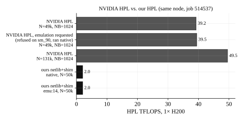
| Implementation (job 514537) | N | NB | time s | TFLOPS | residual | FP64 emulation |
|---|---|---|---|---|---|---|
| NVIDIA HPL, native | 49,152 | 1024 | 2.02 | 39.25 | 3.5e-4 | off |
| NVIDIA HPL, emulation requested | 49,152 | 1024 | 2.01 | 39.45 | 3.5e-4 | Refused, native |
| NVIDIA HPL, larger N | 131,072 | 1024 | 30.30 | 49.55 | 7.6e-4 | off |
| Netlib + shim, native | 50,000 | 1024 | 41.10 | 2.03 | 2.1e-3 | - |
| Netlib + shim, 14 moduli | 50,000 | 1024 | 40.81 | 2.04 | 2.4e-3 | 47 GPU calls |
NVIDIA's HPL is 19× faster on the same hardware (39.3 vs 2.0 TFLOPS at N ≈ 50k). The difference is the HPL design, not the DGEMM: NVIDIA's built-in DGEMM test runs at 52.8 TFLOPS, about the same as the 56 TFLOPS we measure for cuBLAS DGEMM. NVIDIA keeps the whole matrix in GPU memory (22 GiB of HPL buffers at N = 49k), factors panels on the GPU and uses look-ahead, so the host only orchestrates. Our netlib HPL keeps the matrix on the host and pays PCIe for every update. Its GPU DGEMM is only 1.45 s of 41 s here.
In NVIDIA's HPL, DGEMM is the bottleneck. At N = 131072 it reaches 49.6 TFLOPS, 94% of its own DGEMM rate. That is the setting where a faster GEMM would raise the score. In ours, DGEMM is ~4% of the time, so even an infinitely fast GEMM gains at most ~4%. This is why our HPL score cannot show the emulation's GEMM speedup.
NVIDIA does not use FP64 emulation on the H200 either. NVIDIA's HPL contains an Ozaki-II emulated DGEMM (a cuBLASLt ozaki2 kernel, with the GEMMul8 license shipped alongside), selected with HPL_EMULATE_DOUBLE_PRECISION (1 = Ozaki-I, 2 = Ozaki-II) and tuned with HPL_DOUBLE_PRECISION_EMULATION_NUM_MODULI. On the H200 it prints "HPL WARNING: HPL_EMULATE_DOUBLE_PRECISION is supported only on SM100 or newer" and runs native: the residual is bit-identical to the native run (0.000354203724).
This agrees with our own measurements. On the H200, 14-moduli emulation runs at 0.59× native at k = 1024 and 0.87× at k = 2048-4096, so inside a DGEMM-bound HPL it would lower the score. Emulation needs a GPU where INT8/FP64 is much larger than 24×, or a large NB. Figure 2 shows the measured dependence on the inner dimension k for our H200 implementation.
| Case | What happens | Why |
|---|---|---|
| Small k (≤ 2048), skinny, small squares | 0.1-0.9× native, AUTO routes to native | INT32 intermediate traffic dominates, launch overheads |
| HPL trailing updates (k = NB = 1024) | 0.59× (14 moduli), 0.70× (11) | small-k regime |
| φ = 2 data at tol = 0 | fallback, reason 4 | strict target exceeds available retained precision. Offline maximum log2 R is about 12.4 for the checked sample |
| φ = 4 data at every tested tolerance | fallback, reason 4 | level 2 still produces a zero lower bound. The stored log2_ratio = 1048576 is a sentinel, not the true ratio |
| tol tighter than native's own error (1e-15 on wide-exponent data) | fallback, native's result may also miss tol | fallback does not certify the requested target. Native DGEMM also exceeds it on these samples |
| k > 131056 | fallback, reason 2 | INT32 accumulator would overflow |
| netlib HPL score | no gain (± noise) | matrix on host, PCIe/CPU-bound (§5.3-5.4) |
Where this approach pays. On an H200: k >~ 4096-8192, or looser tolerances (8-11 moduli). A larger INT8-to-FP64 throughput ratio could increase the benefit, but the projected gains below require validation on the target GPU. Rescaling our fitted cost model to RTX 5090 datasheet peaks (FP64 1.6 TFLOPS, INT8 838 TOPS, 1.8 TB/s, scripts/project_gpu.py) projects ~21× over native at 16384³ and ~10× at the HPL shape with 14 moduli. That is a projection, not a measurement. For HPL itself, the GEMM must be the bottleneck: a GPU-resident HPL like NVIDIA's.
Uniform [−0.5, 0.5), HPL's own generator distribution: the "HPL-like" case.
φ family: 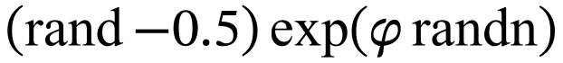
Adversarial: rows scaled by , zero rows/columns, NaN/Inf, 1×1×1, odd shapes, padded leading dimensions, all transposes.
Shapes: squares 1024-16384 (throughput), HPL updates m = n in {8192, 16384, 32768} × k in {256…2048}, skinny (n = 64, 256) and tall (65536×1024×1024).
All timing inside Slurm jobs on compute nodes (never the login node). Each job writes env.txt with host, GPU, clocks, driver and git commit (dirty=0).
Native, v0 and final are always timed in the same job on the same GPU. Native is re-timed at the end of each shape to detect drift.
One whole ozd_dgemm call is timed (CUDA events), median of 10 after 3 warm-ups. Per-stage times come from a separate profiled call, so profiling never inflates the reported times.
A/B comparisons of two builds alternate rounds (scripts/abtest.sbatch). We learned this the hard way: v2 first looked 6-8% slower than v1 only because native DGEMM had just heated the GPU (job 461435 vs. the fair re-run 461490: within 0.5%).
HPL totals vary by up to ~20% between jobs on shared nodes (host work), so HPL configs are compared within one job, using the shim's offloaded wall time.
| Job | What it measured | Job | What it measured |
|---|---|---|---|
| 466571 | final vs v0 vs native, test suite, Nsight | 461201 | HPL N = 60000, serial offload |
| 466503 | cost-model refit, adaptive sweep | 461194 | HPL residual vs moduli |
| 466399 | A/B batched vs per-modulus GEMM | 461491, 462597 | HPL overlapped copies |
| 462933 | level-2 adaptive bound | 463015 | HPL overlapped, 14/12/11 moduli |
| 461134, 462595 | adaptive sweep (repeat identical) | 466542 | HPL, no allocation in timed solve |
| 435745, 441228, 441237 | v0, v1, v1 + integer CRT | 514537 | NVIDIA HPL vs ours, same H200 node |
Excluded record. Job 514579 is excluded because its recorded hardware label conflicts with the project's confirmed hardware. Its original files are preserved unchanged for traceability. None of its timings or conclusions is used in this report.
The project was built with an AI coding agent (Claude Code, Anthropic), driven and reviewed by the student. The workflow is described so others can reuse it.
The final report layout and plotting scripts were revised with Codex using the same experimental result files.
| Student | AI agent |
|---|---|
| Set the goals, constraints and success criteria, picked among the agent's proposals, and set the rule "every number cites a job". | Wrote most of the code: library, tests, benchmark, HPL shim and patch, Slurm and analysis scripts. |
| Reviewed every design choice and result, decided what to keep, drop or redo. | Submitted Slurm jobs on nano4 through a relay CLI, read logs and Nsight summaries, proposed the next experiment. |
| Took the TA's feedback (e.g. "compare with NVIDIA's HPL") and turned it into tasks. | Drafted the reports and README from the committed logs, and this comparison. |
Results are files, not chat. Each recorded job stores results/<job>/ with its environment and experimental commit identifier. Reports quote job IDs, so measurements can be checked against the included files.
Test before believing. The double-double reference and the per-entry bound were written first. Every optimisation had to keep "0 failures" and bitwise determinism.
Over-claim on φ data. A draft said 14 moduli "would have been enough" for φ = 2 at tol = 0. Computing the exact ratio offline (numpy) showed > 16 moduli are needed, so the fallback is correct. The claim was retracted, and the real gap (looser tolerances) was fixed with the level-2 bound.
False regression. An A/B showed v2 6-8% slower. It was GPU heating from a preceding native run. Re-running both builds alike removed it, and abtest.sbatch now enforces that.
Hidden serialisation. Overlap made emulation 2.2× slower. Profiling traced it to a flag read-back on the copy engine (§5.3).
Hand-edited patch. A hand edit broke the hunk counts of hpl-ozd.patch. It was regenerated with diff -u and the build script verifies it applies.
Plans costed with real rates. The fused CUTLASS kernel was dropped after costing it at the INT8 rate actually achieved, not the peak.
Used: netlib HPL 2.3 (tarball + 3-line patch), cuBLAS INT8 and FP64 GEMM, NVIDIA HPC-Benchmarks container (only as a comparison point).
Not used in the library: GEMMul8 and cuBLAS FP64 emulation.
cd hw2 module load x86-nvhpc/26.3 make -j sbatch scripts/bench.sbatch bash scripts/build_hpl.sh N=50000 CONFIGS="native emu:14 emu:11 autotol:0" sbatch scripts/hpl.sbatch apptainer pull hpc-benchmarks-26.02.01.sif docker://nvcr.io/nvidia/hpc-benchmarks:26.02.01 SIF=$PWD/hpc-benchmarks-26.02.01.sif sbatch scripts/nvhpl.sbatch python3 scripts/report_figs.py 514537